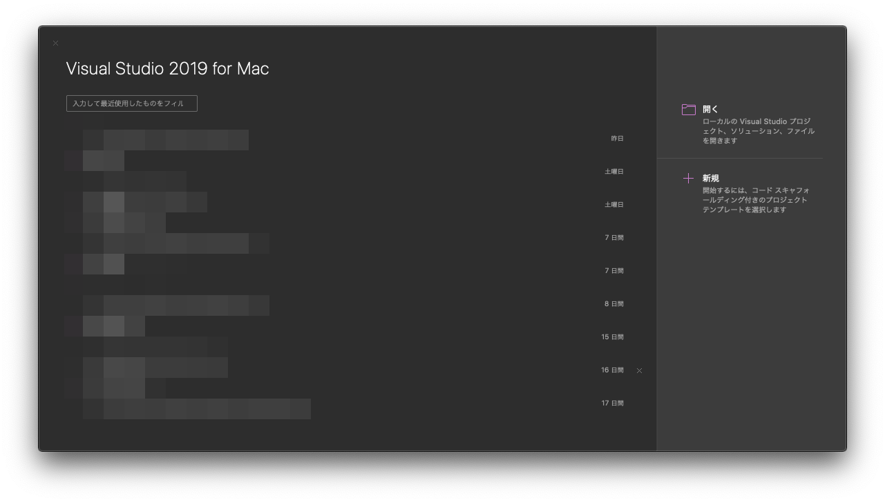
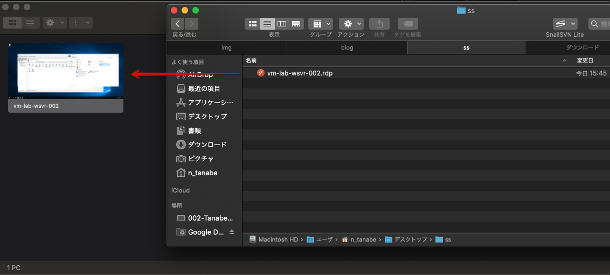
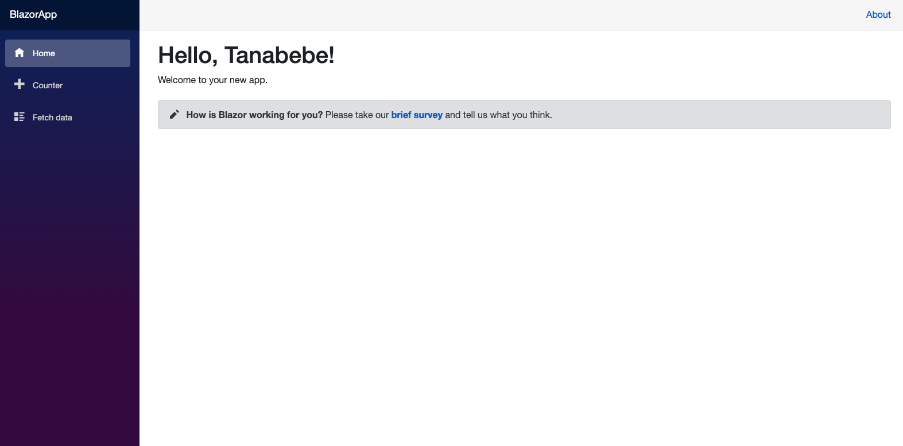

10.1. Macの場合
Visual Studio for MacではAzure VMへWebデプロイの機能が追いついていないため，別の対応方法を記載しています．
Windiowsは全てVisual Studioで完結しますが，Macは少し違う手法を取ります．
プロジェクトの新規作成を選択します．

Blazor Serverを選択します．

認証なしでOKです．

プロジェクト名や場所は任意なので，好きな名称を入力してください．

プロジェクトが作成されたらソリューションで右クリック->公開->フォルダに公開を選択してください．

公開先のフォルダを選択します．
デフォルトのまま変更していないですが，任意です．
作成したプロジェクト内まで移動し，Finderを開きます．

以下のフォルダをWindows Server(VM)へアタッチして，コピーしていきます．

VMに接続するときに使用した.rdpファイルをMicrosoft Remote Desktopへドラッグ&ドロップします．

パネルを右クリックし，Editを選択，Foldersのタブを選択し，Redirect foldersにチェックを付けます．
[+] ボタンをクリックして，Visual Studioで公開先で選択したフォルダを指定し，VMから誤ってファイルが削除されないようにRead-onlyにチェックを付けます．

再びWindows Server（VM）に戻り，Server ManegerからIIS Managerを選択します．

Default Web Siteで右クリック->Exploreを選択します．

MacのMicrosoft Remote Desktopで設定したフォルダがアタッチされているのが確認できました．
デプロイしたいファイル一式となります．

Windows Server(VM)のC:\inetpub\wwwrootまでエクスプローラーを開いて，上記手順で開いたMac内のファイルを全てコピーします．
これでデプロイが完了です．
早速Webページを開いてみましょう．
Blazor Serverで作成されたページが表示されましたね．
Macの場合は少し面倒ですが，デプロイ時は上記の手順を再度繰り返せばOKです．
